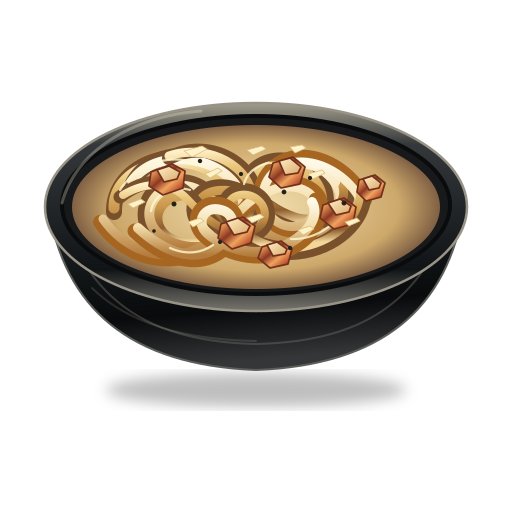

Carbonara — styl SVG premium
Pojedynczy wzorzec. Ciemna ceramika, szczegółowe spaghetti i przezroczyste tło SVG.

Test na ciemnym tlePojedynczy wzorzec. Ciemna ceramika, szczegółowe spaghetti i przezroczyste tło SVG.

Test na ciemnym tle